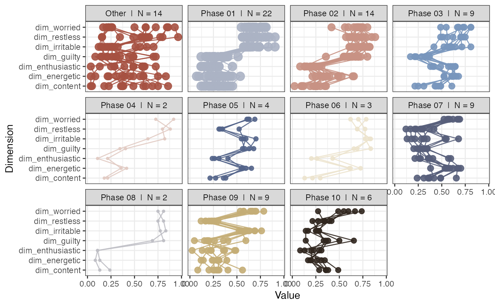
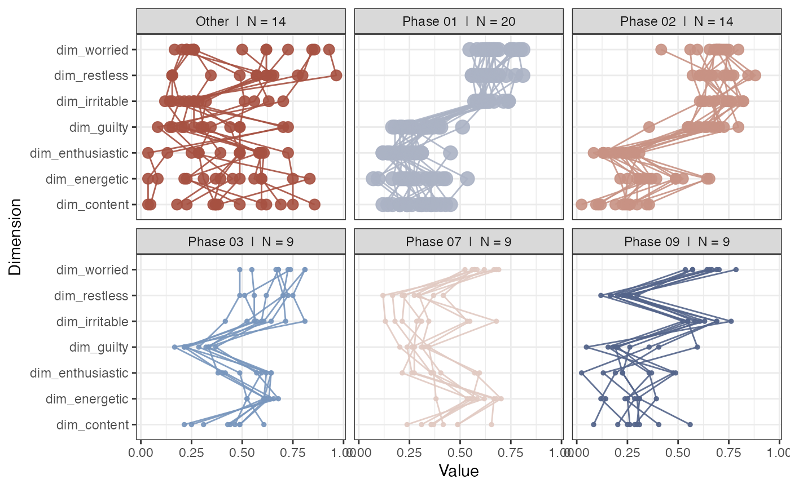

This function will extract phases (regions of attraction in phase space) based on a weighted RN object created with function rn.
The assumption is that coordinates in state space that are either close in terms of distance, or are re-visited with short recurrence times,
or with high-frequency, are regions of attraction for the system.
rn_phases(
RN,
maxPhases = 5,
minStatesinPhase = 1,
maxStatesinPhase = NROW(RN),
cleanUp = TRUE,
returnCentroid = c("no", "mean.sd", "median.mad", "centroid")[1],
removeSingularities = FALSE,
standardise = c("none", "mean.sd", "median.mad", "unit")[4],
returnGraph = FALSE,
doPhaseProfilePlot = FALSE,
plotCentroid = FALSE,
space_dims = NULL,
colOrder = FALSE,
phaseColours = NULL,
doSpiralPlot = FALSE,
doPhaseSeriesPlot = FALSE,
showEpochLegend = TRUE,
epochColours = NULL,
epochLabel = "Phase",
excludeOther = FALSE,
excludeNorec = TRUE
)A matrix produced by the function rn
The maximum number of phases to extract. If NA, the value will be set to NROW(RN) (default = 5)
A parameter applied after the extraction of phases (limited by maxPhases). If any extracted phases do not have a minimum number of minStatesinPhase + 1 (= the state that was selected based on node strength), the phase will be removed from the result (default = 1)
A parameter applied after the extraction of phases (limited by maxPhases). If any extracted phases exceeds a maximum number of maxStatesinPhase + 1 (= the state that was selected based on node strength), the phase will be removed from the result (default = NROW(RN))
Try to assign states to phases that were not assigned by the algorithm. If FALSE, these states will be added to category "Other" (default = TRUE)
Values can be "no", "mean.sd", "median.mad", "centroid". Any other value than "no" will return a data frame with the central tendency and deviation measures for each phase (default = "no")
Will remove states that recur only once (nodes with degree(g) == 1) (default = FALSE)
Standardise the series using ts_standardise() with adjustN = FALSE (default = "mean.sd")
Returns all the graph object objects of the plots that have been produced (default = FALSE)
Produce a profile plot of the extracted phases (default = TRUE)
Plot the centroid requested in returnCentroid? (default = FALSE)
A vector of titles to use for the dimensions. If NULL the values will be read from the attribute of RN.
Should the order of the dimensions reflect the order of the columns in the dataset? If FALSE the order will be based on the values of the dimensions observed in the first extracted phase (default = FALSE)
Colours for the different phases in the phase plot. If epochColours also has a value, phaseColours will be used instead (default = NULL)
Produce a plot of the recurrence network with the nodes coloured by phases (default = FALSE)
Produce a time series of the phases as they occur with a marginal histogram of their frequency (default = FALSE)
Should a legend be shown for the epoch colours? (default = TRUE)
A vector of length vcount(g) with colour codes (default = NULL)
A title for the epoch legend (default = "Epoch")
Should the phase "Other" be excluded from plots? (default = FALSE)
Should the category "No recurrence" be excluded from plots? (default = TRUE)
A data frame with information about the phases or a list object with data and graph objects (if requested).
The method used for the identification of phases is on the properties of the RN object:
If weighted by distance "si", the inverse distance will be used, which means higher weights correspond to closer states.
If weighted by recurrence time "rt", the inverse time will be used, which means higher weights correspond to faster recurrence times.
The procedure is as follows:
Identify the node with the highest strength
Identify the nodes that connect to this node
Identify the node with highest strength that does not connect to the node identified in step 1.
Repeat until criteria set in maxPhases, minStatesinPhase and maxStatesinPhase are triggered.
Clean up. If cleanUp = TRUE the remaining states that connect to nodes of one of the identified phases, but not to the node with highest strength identified in step 1 will be added to that phase. Otherwise these nodes will end up in category "Other".
# Use the ManyAnalysts dataset to create a phase plot with default settings
data("manyAnalystsESM")
df <- manyAnalystsESM[4:10]
RN <- rn(y1 = df, doEmbed = FALSE, weighted = TRUE, weightedBy = "si", emRad = NA)
# This returns 6 phases which have minimally 1 state
rn_phases(RN, maxPhases = 10, doPhaseProfilePlot = TRUE)

# Use min. number of states as the extraction criterion
rn_phases(RN, maxPhases = NA, minStatesinPhase = 7, doPhaseProfilePlot = TRUE)
